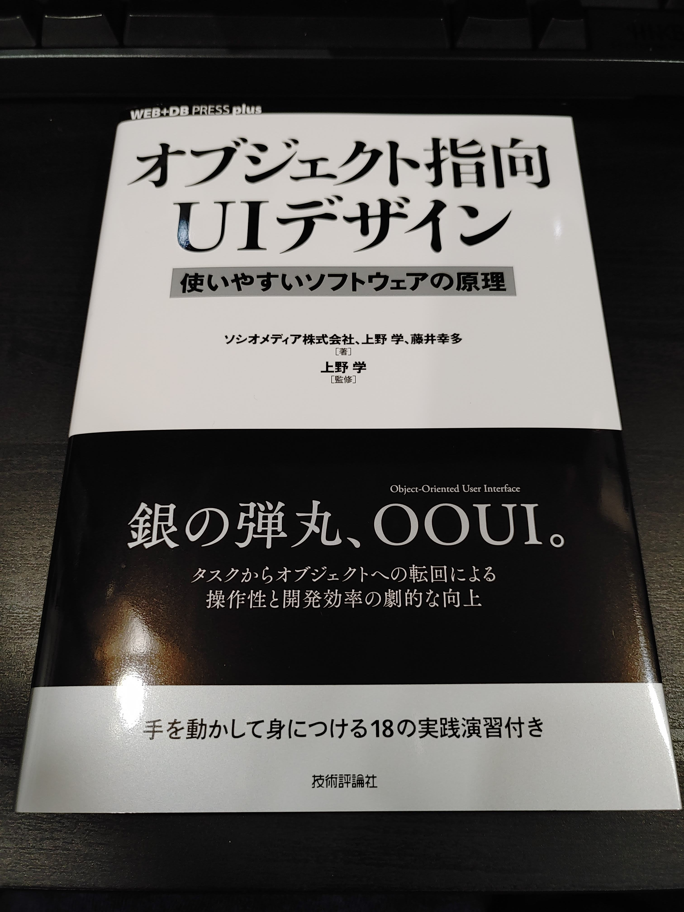

表表紙に大きく書かれた 銀の弾丸、OOUI に強く惹かれてAmazonでポチってた本が, ようやく届きました.

書籍の紹介
購入したのは, オブジェクト指向UIデザイン──使いやすいソフトウェアの原理 という書籍で, 技評さんから出てます.
オブジェクト指向UIデザイン──使いやすいソフトウェアの原理 (WEB+DB PRESS plusシリーズ) (日本語) 単行本（ソフトカバー） – 2020/6/5
Kindle版もあります. オブジェクト指向UIデザイン──使いやすいソフトウェアの原理 WEB+DB PRESS plus Kindle版
Amazonの書籍概要を引用すると,
オブジェクト指向ユーザーインターフェース（OOUI）とは、オブジェクト（もの、名詞）を起点としてUIを設計すること。タスク（やること、動詞）を起点としたUIに比べて、画面数が減って作業効率が高まり、また開発効率や拡張性も向上する、いわば「銀の弾丸」的な効果を持つ。ブログや雑誌記事などで大きな反響を得たこの設計手法について、前半部では理論やプロセスを詳説。そして後半部の「ワークアウト（実践演習）」では18の課題に読者がチャレンジ。実際に考え、手を動かし、試行錯誤をすることにより、OOUIの設計手法を体得できる。
オブジェクト指向UIとは如何なるものか, そしてオブジェクト指向UI設計手法に関する実践的な演習も含まれているとあり, 単に読むだけでなく手を動かすことでイメージしながら身に付けることができそうで読むのが楽しみでならない.
とりあえず導入だけ読んだ感想
まだ本編には入っていないが, その前段の導入部分を軽く読んでみた.
著者は, 今日のソフトウェアデザインではタスク指向なものが多く, ユーザにとって使いづらいソフトウェアばかりであると述べている. 確かに, どうしてもビジネス要件を満たすような設計になりがちで, ユーザが自由に使いこなすというよりは開発側が想定したレールに乗っかるように誘導して使わせているという感じになっているソフトウェアも存在していると思う.
さらに著者は, これまでの経験からタスク指向なソフトウェアを半ば機械的にオブジェクト指向なデザインへ転回することができると述べている. 現時点（導入部分）においては具体的な話は出てきていないが, 読み進めていくことでここが明らかになってくると思う.
たった数ページしか読んでいないが, すごく興味をそそられたので, 読書が苦手な自分でもガンガン読めそう.
読み終わったらまた感想を書こうと思う.
もし興味があったら, 読んでみて欲しい.